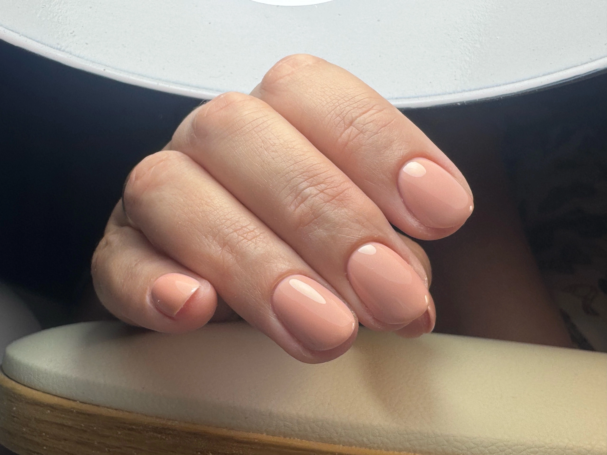
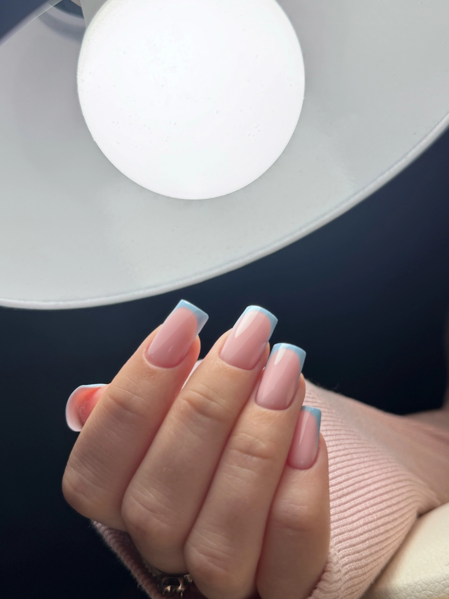
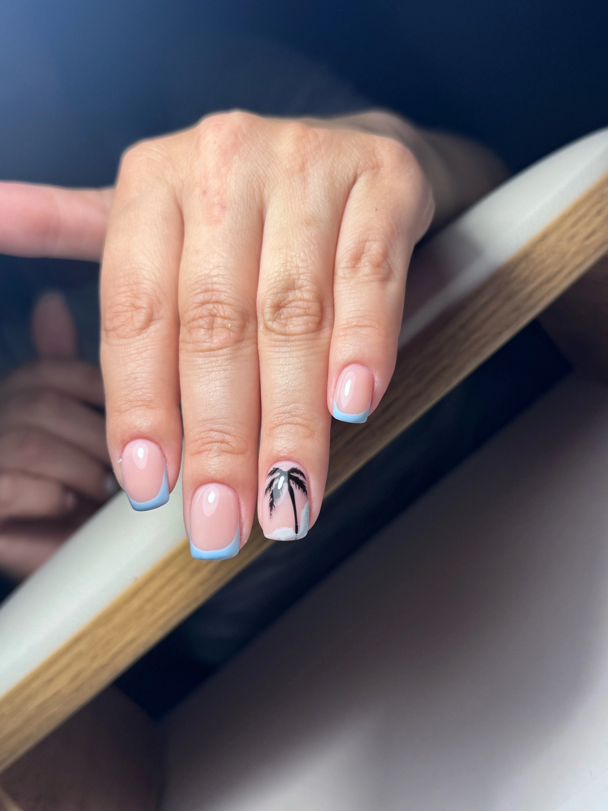
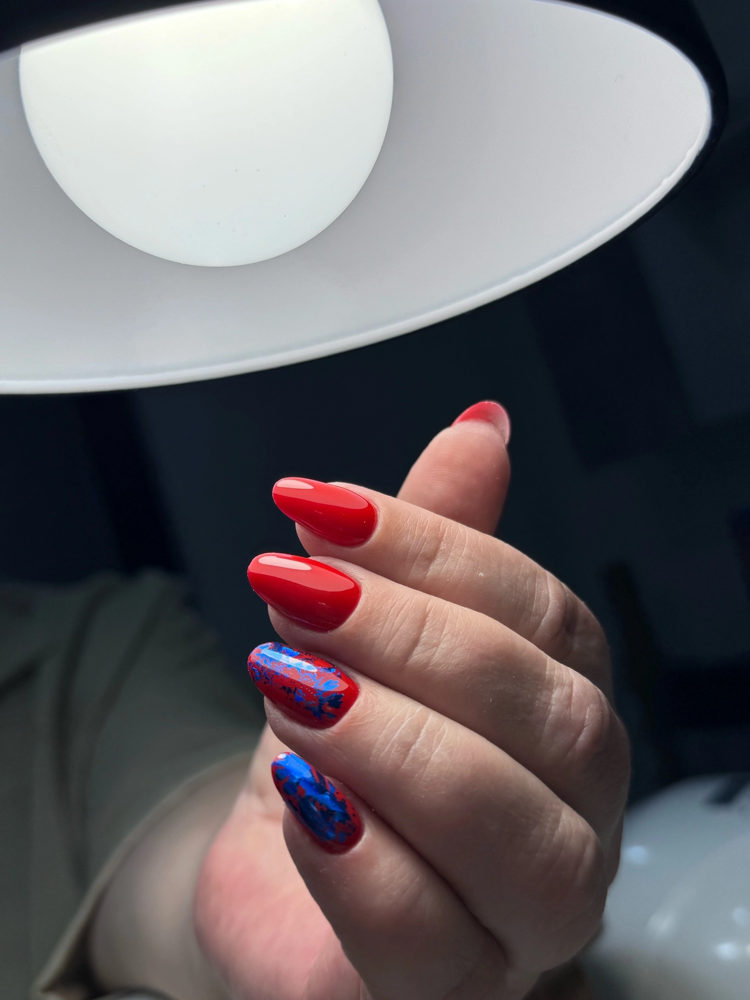

SOROCHKINA LIDIA · КАЛУГА
Маникюр в Калуге у мастера Sorochkina Lidia
Комбинированный маникюр, гель-лак, укрепление, наращивание и дизайн ногтей в спокойной домашней студии на ул. Ленина, 30.
🎁 Новым клиентам — скидка 10% на первое посещение.
🏠 Уютная студия в Калуге
Спокойная атмосфера, чистота и внимание к деталям — без очередей и посторонней суеты. Адрес: ул. Ленина, 30.
Мастер маникюра в Калуге
Аккуратность в каждой детали
Комфортный процесс и результат, которым приятно любоваться.
Чистота и обработка
Инструменты проходят обработку, крафт-пакет вскрывается при клиенте.
Ровное покрытие
Внимание к подготовке, форме и аккуратности нанесения без лишней толщины.
150+ оттенков
Нюд, классика, френч и яркие варианты для разных образов и настроения.
Услуги маникюра в Калуге
Что можно сделать у Лидии
Выберите процедуру или напишите мастеру, если не уверены, что подойдёт именно вам.
Почему выбирают
Комфортная запись без лишней суеты
Портфолио
Работы мастера
Нюд, френч, дизайн и укрепление ногтей.

Нюд
Френч
Дизайн
УкреплениеО мастере
Лидия Сорочкина — мастер маникюра в Калуге
Создаю аккуратный маникюр с вниманием к форме, чистоте обработки и деталям дизайна. Моя задача — чтобы результат нравился вам не только сразу после процедуры, но и в течение всей носки.
Обсудить записьСпокойный темп, понятная коммуникация и внимание к пожеланиям клиента.
FAQ
Частые вопросы о маникюре
Как записаться на маникюр в Калуге?
Самый быстрый способ — открыть онлайн-запись DIKIDI и выбрать подходящее время. Для вопросов можно написать мастеру.
Можно ли сделать маникюр с гель-лаком и укреплением?
Да, услуга «Маникюр + гель-лак» включает укрепление и выравнивание. Актуальная стоимость указана в прайсе.
Можно ли сделать френч или другой дизайн?
Да. Можно заранее показать референс, чтобы обсудить желаемый результат и возможность его выполнения.
Можно ли сделать наращивание или коррекцию?
Да, выполняются наращивание и коррекция. Стоимость начинается от 1 800 ₽ и зависит от объёма работы.
Где находится студия?
Студия находится в Калуге по адресу: ул. Ленина, 30. Точные организационные детали визита уточняются при записи.
Следующий шаг
Запишитесь на маникюр в Калуге
Выберите удобное время онлайн или напишите мастеру, если хотите сначала задать вопрос.